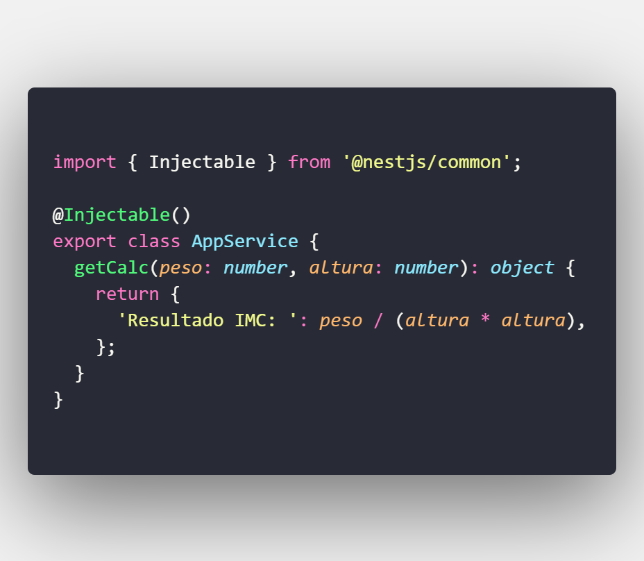
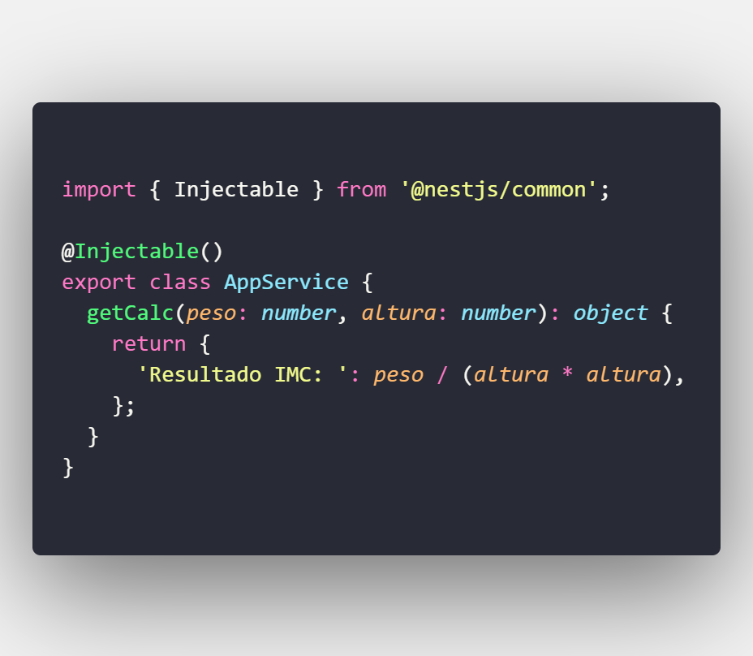
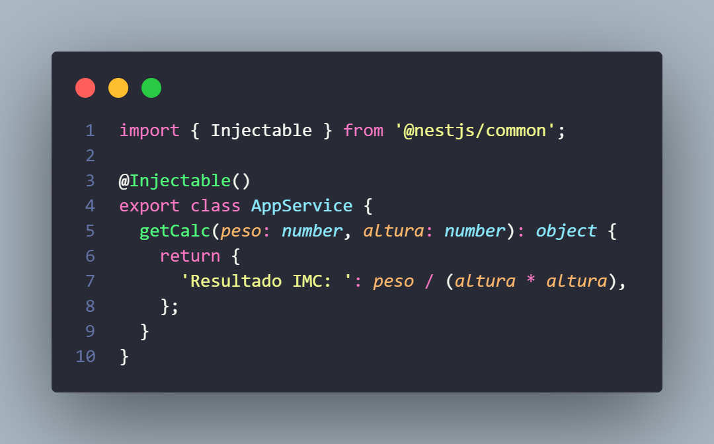
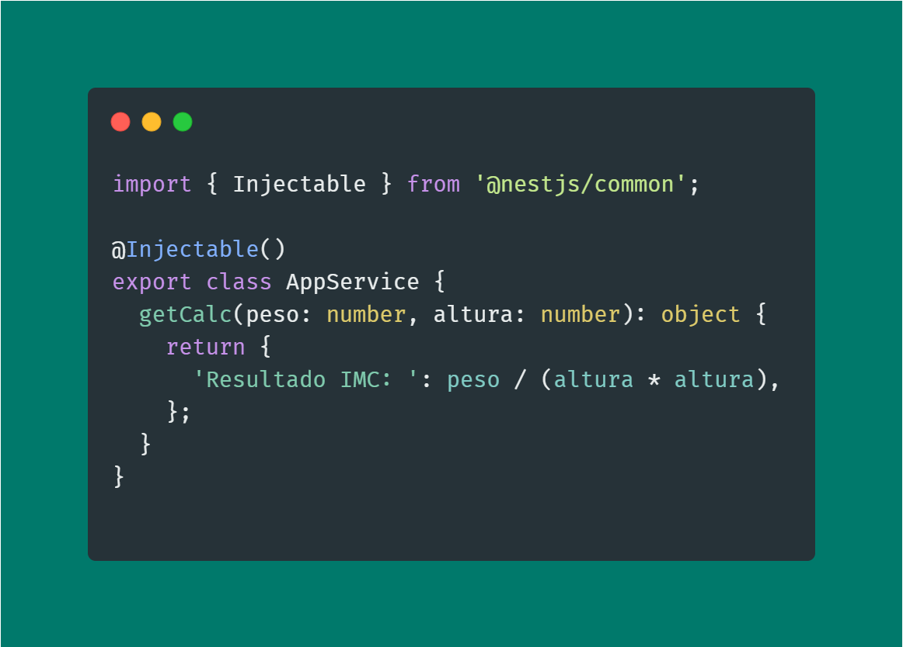

Polacode
Polacode é uma extensão do Visual Studio Code que permite criar capturas de tela únicas e fragmentáveis do seu código. Ao usar o Polacode, ele retém seu tema e fontes existentes e os torna para um layout incrível. Confira:
Polacode é uma extensão do Visual Studio Code que permite criar capturas de tela únicas e fragmentáveis do seu código. Ao usar o Polacode, ele retém seu tema e fontes existentes e os torna para um layout incrível. Confira:
CodeSnap é semelhante ao Polacode, uma vez que também é uma extensão VS Code. Se você tiver problemas com polacode funcionando, dê uma chance ao CodeSnap.
Carbono é uma biblioteca de código aberto e livre para criar e compartilhar imagens incríveis do seu código fonte. As opções disponíveis ao usar o Carbon incluem a capacidade de alterar seu tema de cor, a capacidade de selecionar sua linguagem de programação preferida, a capacidade de compartilhar um tweet da captura de tela do seu código e personalizar coisas como sintaxe de imagem, estilo janela, cor de fundo, tema de cor e muito mais.
OBSERVAÇÃO: Não há absolutamente nenhuma necessidade de instalar Carbono em seu PC, basta clicar aqui, colar o seu código e capturar a tela!
Desculpe! Responsividade em andamento.